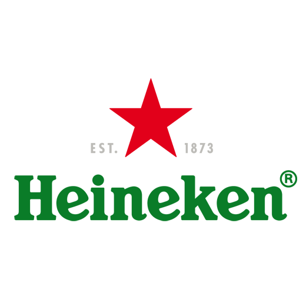
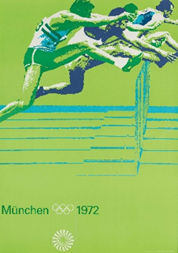
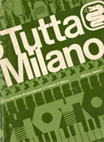
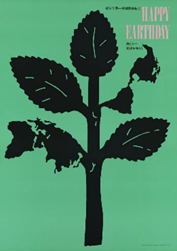

Il colore che richiama natura e armonia
Il verde è percepito come un colore stabile e riposante, spesso associato a equilibrio e naturalezza.
La sua presenza trasmette una sensazione di calma, sicurezza e continuità, risultando tra i colori più confortevoli per la percezione.
Il verde è legato alla natura, alla crescita e alla vita vegetale, diventando simbolo di sviluppo, fertilità e rigenerazione. È associato anche a concetti di speranza, prosperità e armonia.
Esso viene utilizzato per comunicare equilibrio, benessere e affidabilità. È particolarmente efficace nei sistemi informativi e di orientamento, come la segnaletica e il wayfinding.
Per la sua forte leggibilità e stabilità percettiva, è spesso impiegato in identità visive legate a salute, ambiente, turismo, tecnologia sostenibile e servizi pubblici.
0, 255, 0
100%, 0%, 100%, 0%
88, -86, 83
120°, 100%, 100%
Marchio Heineken, redesign del 2011

Marchio NVIDIA, 2006
Marchio Whole Foods Market, 1980
Manifesto per Olimpiadi di Monaco, 1972

Opuscolo per l'Ente Provinciale per il Turismo Milano, 1976

Poster "Happy Earthday", 1982
